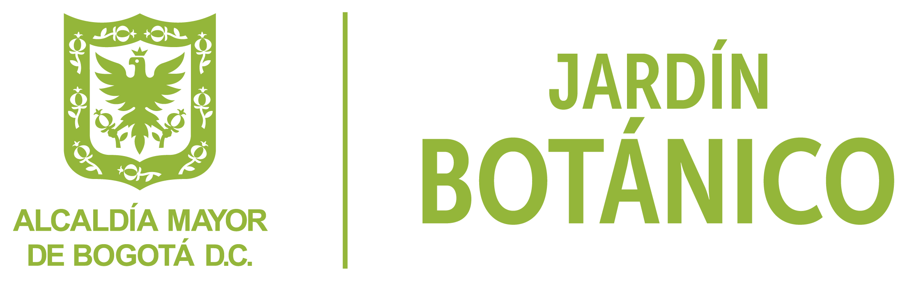

Buscamos que sea el Jardín Botánico nuestro aliado principal, ya que muchos escenarios principales del juego, se basan en el grandioso ecosistema que puedes ver cuando lo visitas.
Ir a conocer más del Jardín Botánico
En el juego, te moverás por distintos escenarios que representan un bioma distinto, similar a la zona del Jardín Botánico de Bogotá conocida como “Tropicario”.
Según un registro realizado en 2020 por la entidad GBIF (Global Biodiversity Information Facility) El Jardín Botánico de Bogotá "José Celestino Mutis" en sus instalaciones tiene un total de 165 familias de plantas, 673 géneros y 1.373 especies.

El Día Después es un acercamiento de una idea sobre como cuidar los recursos naturales, nos puede llevar a un mejor mañana.